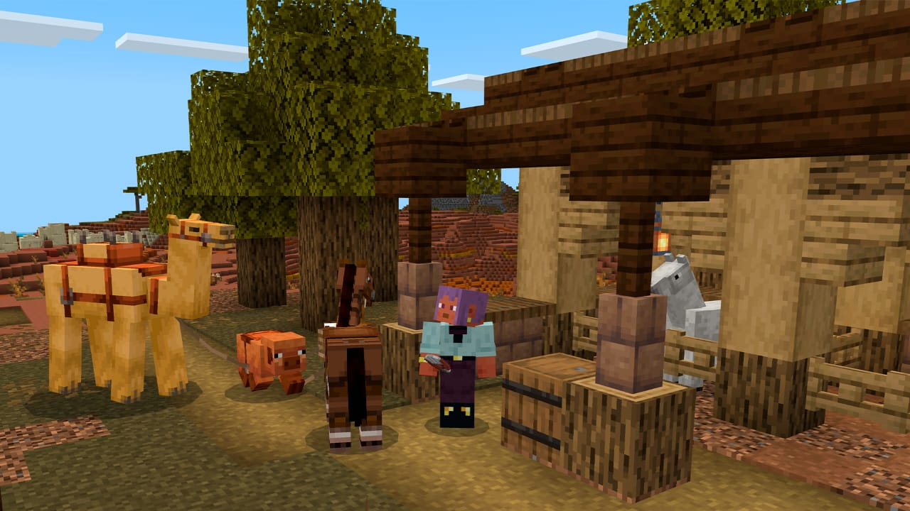
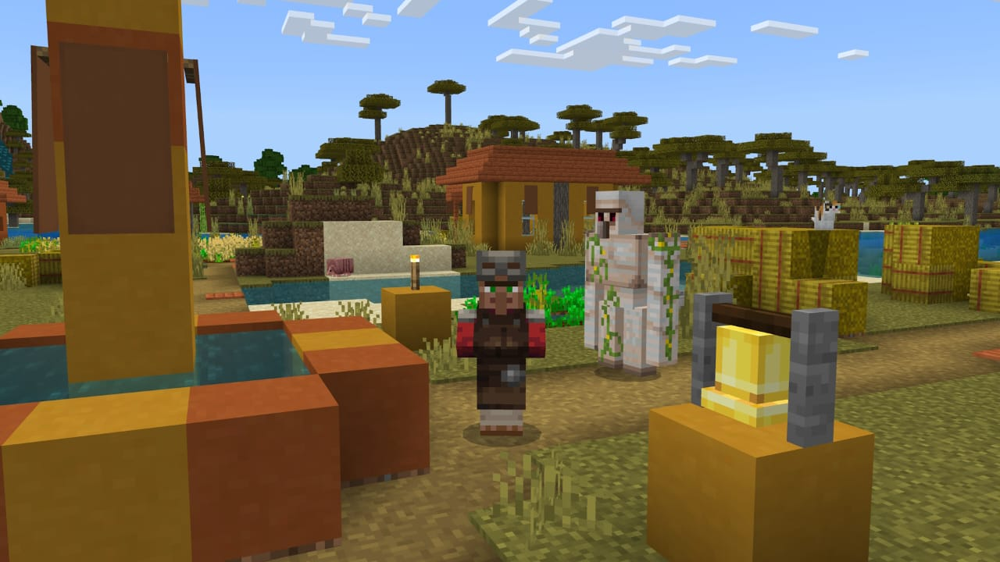
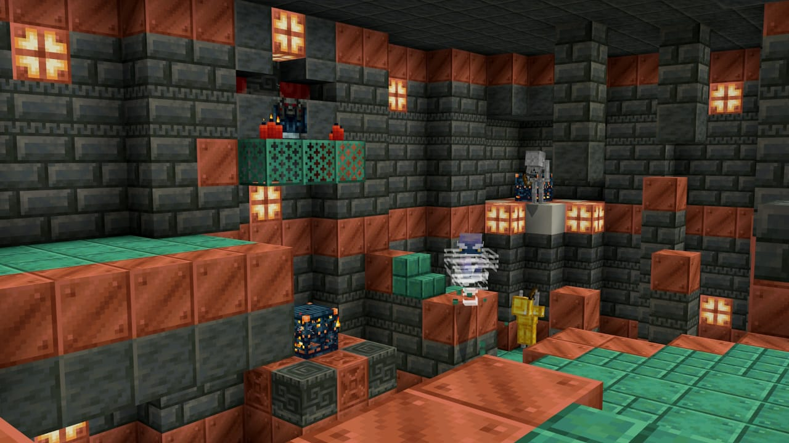

Videojuego seleccionado: Minecraft
Descripción breve:
Minecraft es un juego de mundo abierto y tipo sandbox donde los jugadores pueden explorar y construir prácticamente sin límites. Fue creado por Markus “Notch” Persson y salió por primera vez el 17 de mayo de 2009. Con el tiempo, Mojang Studios (su estudio creador) fue comprado por Microsoft por 2.500 millones de dólares.
El juego tiene varios modos, como supervivencia, creativo y aventura. En cada uno se pueden hacer cosas distintas: desde conseguir recursos y luchar contra enemigos, hasta simplemente dedicarte a construir lo que se te ocurra.
Su estilo gráfico pixelado, junto con una mecánica sencilla pero muy completa, hizo que se convierta en uno de los juegos más populares y vendidos de la historia.
Algo que lo hace especial es su comunidad, que no deja de crecer con los años. A diferencia de muchos otros juegos que se vuelven repetitivos, Minecraft siempre da ganas de empezar un mundo nuevo, ya sea para jugar solo o en un servidor con amigos.
Esa libertad de poder crear y reinventar la experiencia es lo que lo mantiene vivo después de tanto tiempo y lo hace atractivo para todas las edades.
Imágenes del trabajo


